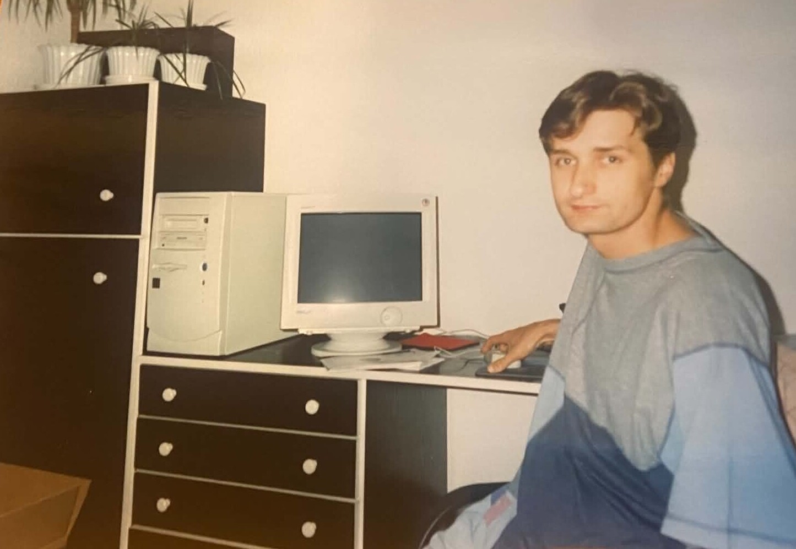
IX '99świetnie programujesz
Pokazałeś mi świat informatyki, wybrałeś i kupiłeś mój pierwszy komputer oraz pomogłeś rozwinąć pasję do programowania.
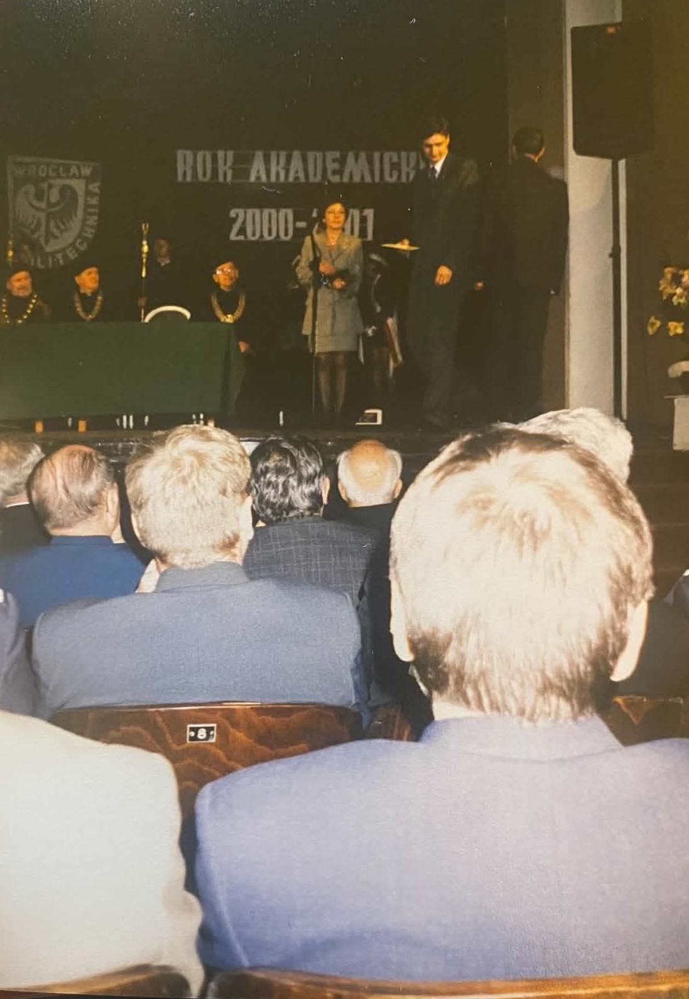
X '00wiedza zawsze była dla Ciebie ważna
Nauka, studia, praca i ciągły rozwój zawsze były czymś więcej niż obowiązkiem. Dzięki Twojemu przykładowi teraz uwielbiam się uczyć nowych rzeczy.
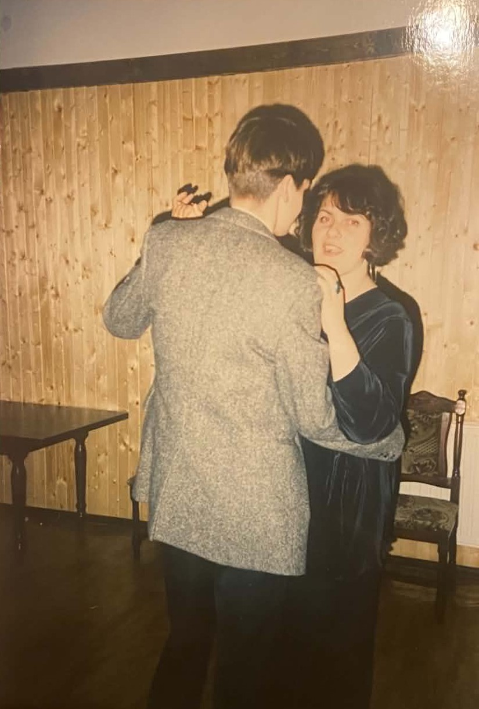
II '00potrafisz się bawić
Pokazałeś mi, że do świetnej zabawy wcale nie potrzeba alkoholu ani wielkich rzeczy. Wystarczy uśmiech i miłość. Prawdziwe szczęście się kryje w małych gestach i zwykłych chwilach spędzonych razem.
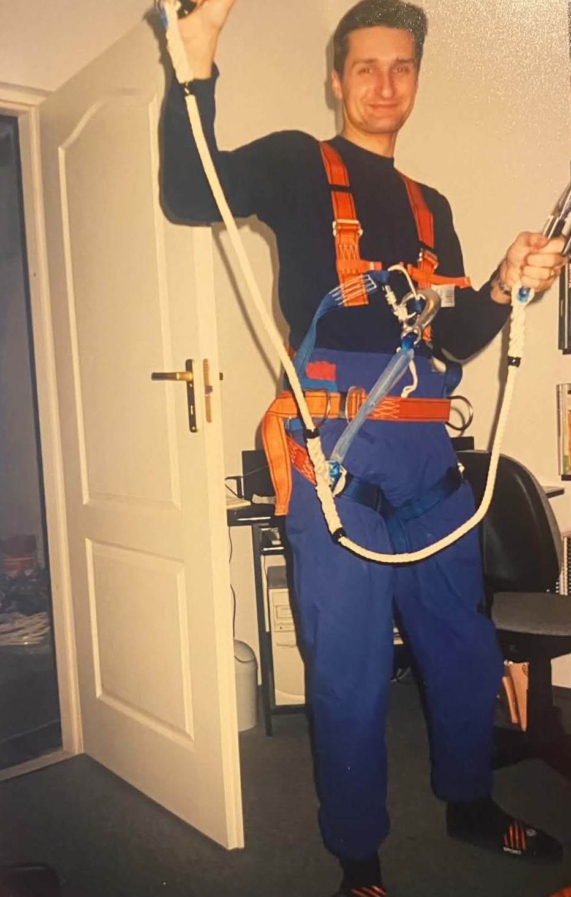
I '01twoja praca jest strasznie cool ;-)
Dzięki Tobie zrozumiałam, że trzeba w życiu robić to co nas uszczęśliwia i dlatego dążę do jak najciekawszego życia.
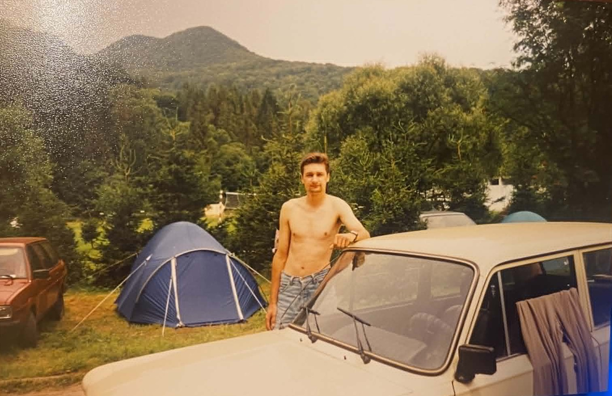
VII '01nauczyłeś mnie cieszyć się prostotą
Namiot, góry, camping, spanie na dziko. Dziękuję, że to nigdy nie było all-inclusive. Nauczyłeś mnie doceniać małe rzeczy i zrozumiałam, że to w nich tkwi największa radość.
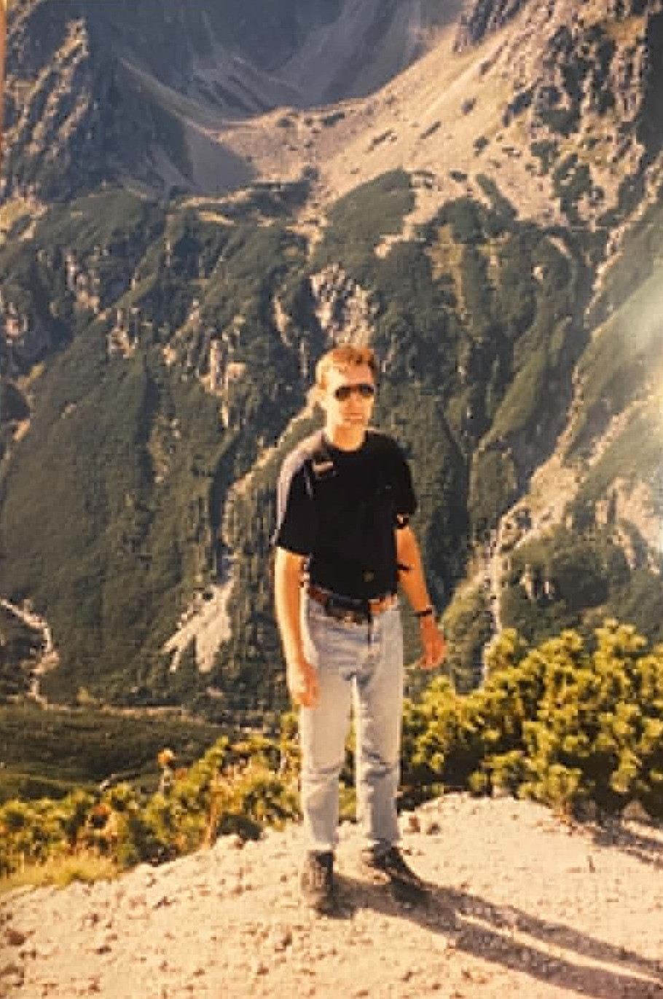
Tatryzaraziłeś mnie pasją do gór
Od dzieciństwa na wakacje jeździliśmy w góry i pokazałeś mi czym jest duch gór. Karkonosze i Odrodzenie są dla mnie domem, a góry spokojem i odpoczynkiem.
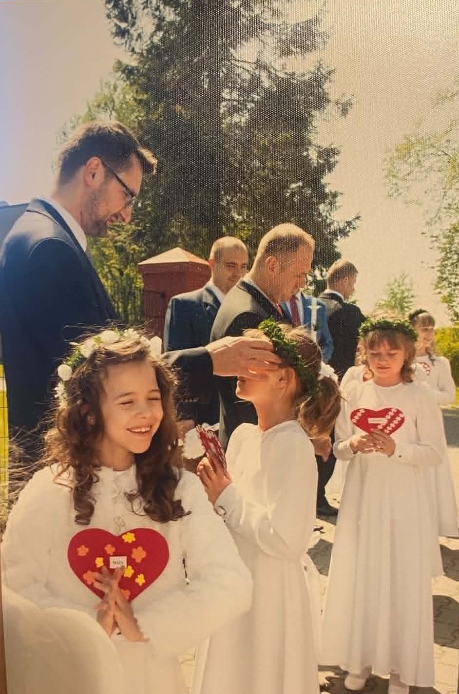
V.2017pokazałeś mi czym jest wiara
Wychowałeś mnie w rodzinie pełnej wiary, miłości i zrozumienia. To dzięki Tobie poznałam Boga i zrozumiałam, jak wielką miłością mnie obdarza. Pokazałeś mi, że wiara daje siłę i nadzieję do codziennego życia, a dziś nie wyobrażam sobie życia bez niej.
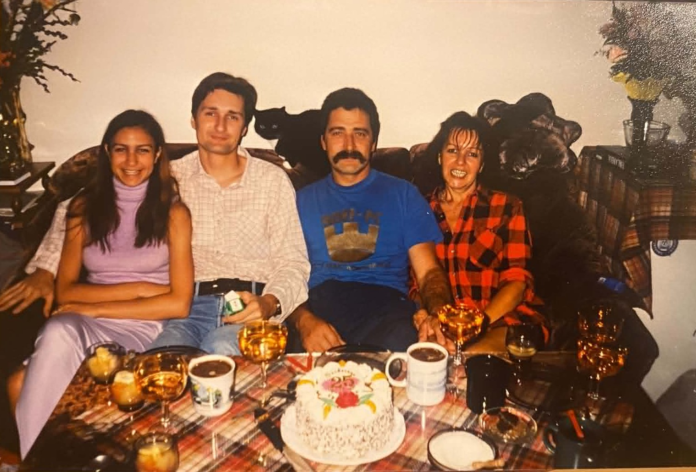
VI '01rodzina zawsze była dla Ciebie najważniejsza
Dałeś mi przykład jak dbać o najbliższych i jak darzyć ich miłością mimo wszelkich trudności z tym związanych. Prowadzisz naszą rodzinę przez wzloty i upadki i co najważniejsze - zawsze przy nas jesteś.
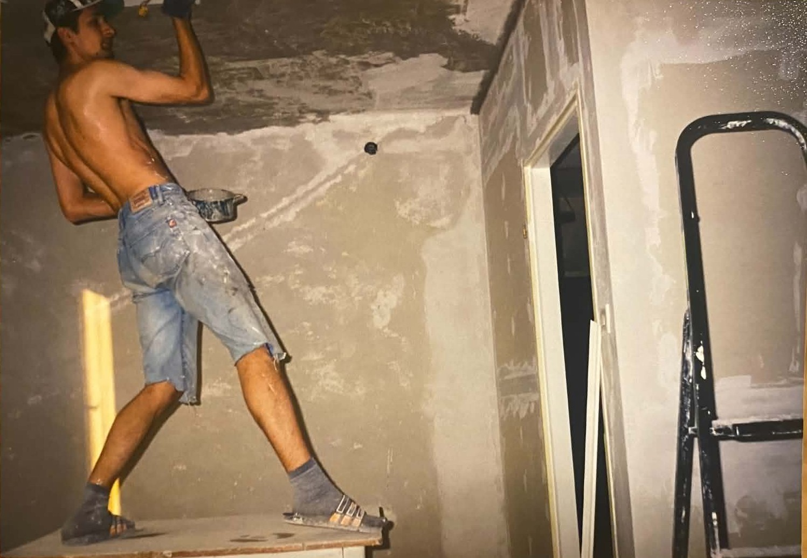
IX '00zawsze zajmowałeś się domem
Przeprowadziłeś cały remont, dbasz o ogródek i stworzyłeś mi najwspanialsze środowisko do dorastania, jakie mogłam sobie wyobrazić. Dziękuję, że mam miejsce na tym świecie, kóre mogę nazwać domem.
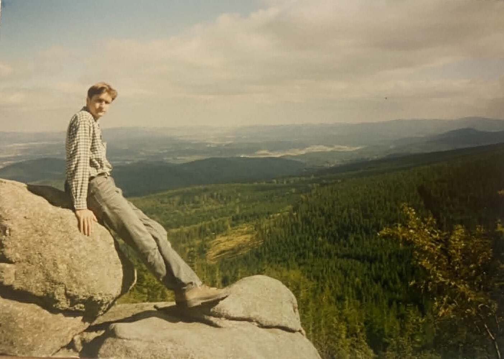
jesień '97jesteś odważny
Pokazałeś mi, że da się robić wiele ciekawych rzeczy, a przy tym być odpowiedzialnym. Nauczyłeś mnie odwagi i pewności siebie w życiu oraz w codziennych sprawach.
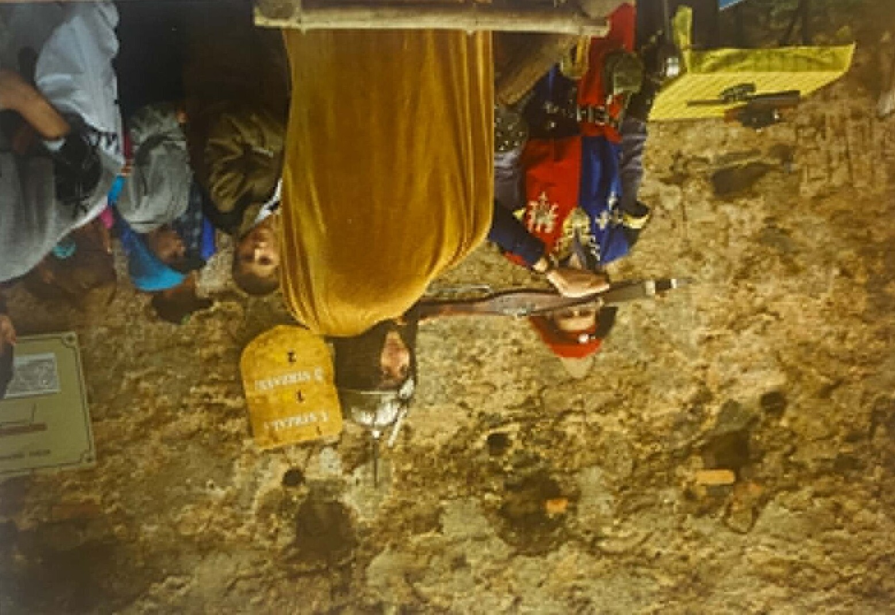
'98zawsze walczysz o swoje
Nauczyłeś mnie, aby nigdy się nie poddawać i z dyscypliną dążyć do celu. Przy okazji iść z humorem przez życie ;-)
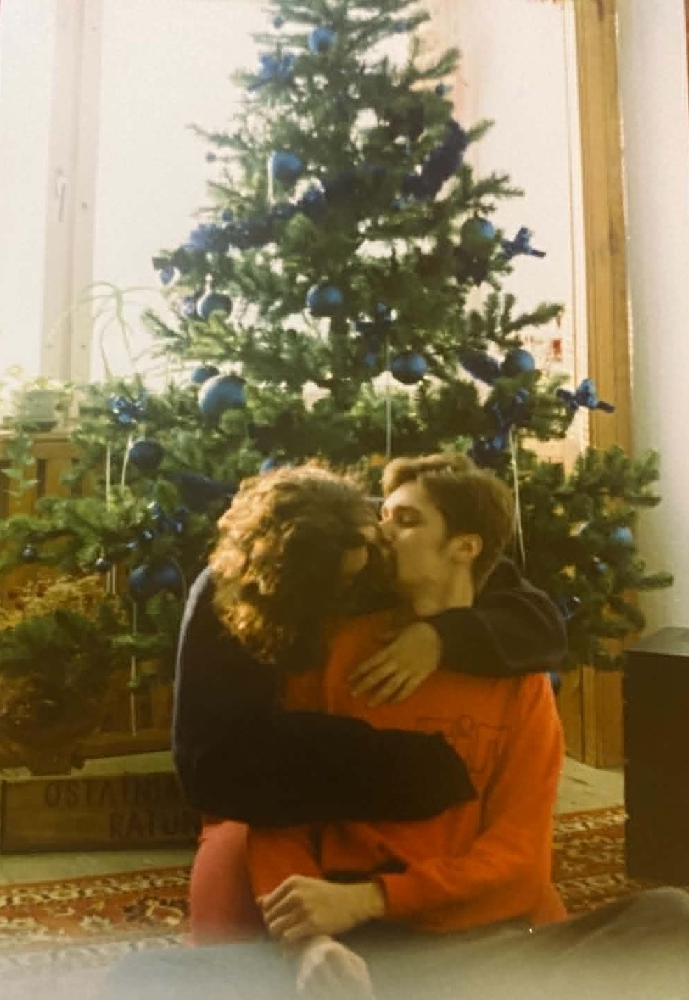
XII '96kochasz najbliższych bez wahania
Razem z mamą daliście mi i Zuzi kochającą rodzinę i dom pełen miłości. Patrząc na Waszą miłość nauczyłam się szczerze kochać drugiego człowieka.